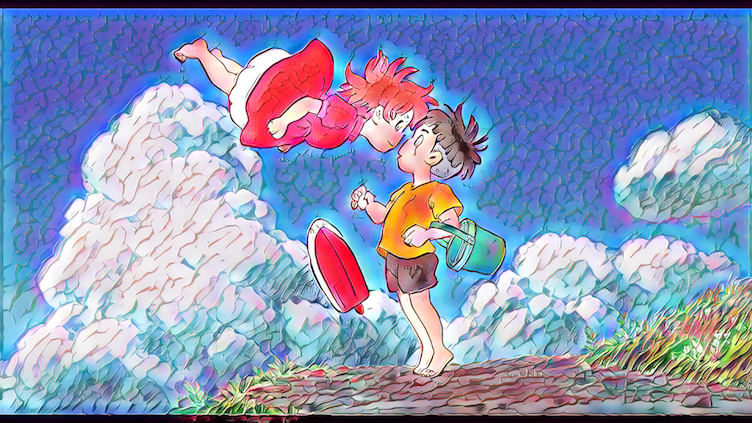

- Home
- Glitch
- Meme
- Zbrush
- Blender
- Net Art
- AI Art
- About Me
SPADE COCO
On Runway, I used the model SPADE COCO. I created a vague drawing of a scene from a movie as an input and let the AI interpret the drawing as the output.
AdaIN
Using another model on runway, AdaIN I was able to impose the art style of one one piece onto another.
